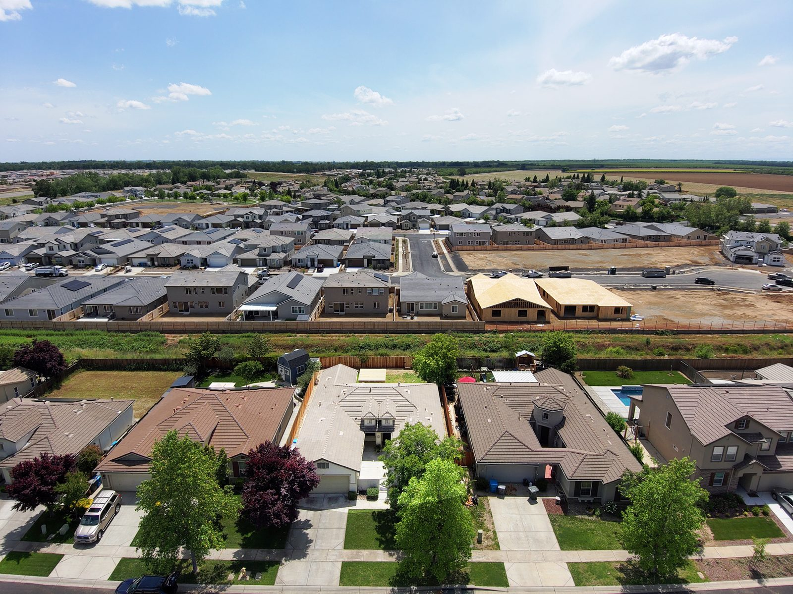
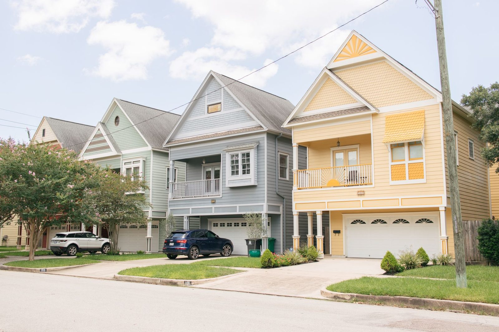

24/7 Water Damage Restoration in Allen, TX 75002 & 75013
Burst pipe in the attic, washer overflow upstairs, or water spreading across your floors? Blackland Restoration Co. provides 24/7 water damage restoration in Allen, TX for homes and businesses in 75002 and 75013. We extract the water, dry the structure, stop mold before it starts and handle the repairs. Call now and an IICRC certified crew is dispatched immediately.
- ✓ IICRC Certified Technicians
- ✓ 24/7 Emergency Response
- ✓ Insurance Documentation
- ✓ Daily Moisture Monitoring
Allen Water Damage Restoration at a Glance
| Service | 24/7 water damage restoration, mitigation and repair |
| City | Allen, Texas (Collin County) |
| ZIP Codes | 75002, 75013 |
| Response | Crew dispatched immediately, 24 hours a day |
| Team | IICRC certified technicians |
| Drying Standard | IICRC S500 with daily moisture readings |
| Insurance | Xactimate estimates, photos and drying logs |
Who Do I Call for Water Damage in Allen, TX?
Call a 24/7 water damage restoration company first. They stop the spread, extract water and start drying the same visit, then work with your plumber and insurance adjuster on the rest.
Water Damage Repair in Allen Starts the Moment You Call
Allen homes are mostly two-story builds from the 1990s and 2000s, with laundry rooms upstairs and water heaters, air handlers and plumbing in the attic. When something fails up there, water travels through ceilings and walls fast. That is why speed matters most for water damage repair in Allen.
Our crews come in from US-75, the Sam Rayburn Tollway and Stacy Road with truck-mounted extraction, LGR dehumidifiers, air movers and thermal cameras. Here is what happens on arrival:
- Stop the source and make the area safe
- Map the moisture with thermal imaging and meters
- Extract standing water from floors, carpet and pad
- Remove what can't be saved and protect what can
- Dry and monitor daily until every reading hits its target
Common Water Damage Calls Across Allen Neighborhoods
| Allen Area | Typical Homes | What We See Most |
|---|---|---|
| Twin Creeks | Larger two-story homes | Upstairs laundry floods, attic water heater leaks |
| Star Creek | Custom and semi-custom homes | Hardwood floor water damage, fridge line leaks |
| Montgomery Farm and Watters Creek area | Newer homes and townhomes | Supply line breaks, dishwasher leaks |
| Bethany Lakes and central Allen | 1980s to 1990s homes | Slab leaks, aging water heaters |
| Homes near Rowlett Creek and Cottonwood Creek | Mixed ages | Storm runoff and flooded garages |
Our Water Damage Services in Allen, TX
- Water removal in Allen TX: truck-mounted extraction and pumps for standing water
- Water mitigation in Allen: stop the spread and set up controlled drying
- Structural drying in Allen: walls, studs, subfloors and slabs
- Burst pipe cleanup in Allen: attic, wall and frozen pipe breaks
- Slab leak water damage in Allen: concrete, tile and hardwood drying after the plumber's repair
- Ceiling water damage repair in Allen: sagging and stained ceilings, wet insulation
- Hardwood floor drying in Allen: mat systems to save cupped floors
- Flood and storm cleanup in Allen: Category 3 sanitizing and mud removal
- Sewage cleanup in Allen: toilet and sewer backups
- Mold remediation in Allen: containment, HEPA cleaning and moisture repair
- Reconstruction in Allen: drywall, flooring, cabinets and paint
Emergency Water Damage in Allen? What to Do Before We Arrive
For emergency water damage in Allen, every minute counts. While your crew is on the way:
- Shut off the main water valve
- Turn off power to wet rooms at the breaker if it's safe
- Move electronics, rugs and valuables to a dry area
- Take photos for your insurance claim
- Stay out from under any sagging ceiling
Insurance Help for Allen Homeowners
We document every loss with photos, moisture maps and daily drying logs, and write estimates in Xactimate, the software most insurers use. We can talk directly with your adjuster so your water damage repair in Allen moves forward without guesswork. Coverage decisions are made by your insurer under your policy.
Why Allen Calls Blackland Restoration Co.
- IICRC certified technicians
- 24/7 emergency response with immediate dispatch
- Save-first drying to protect walls, cabinets and hardwood
- One team from water removal to final repairs
Allen ZIP Codes We Serve
75002 and 75013, including Twin Creeks, Star Creek, Montgomery Farm, Bethany Lakes and every neighborhood between the Sam Rayburn Tollway and Exchange Parkway.
How Much Does Water Damage Restoration Cost in Allen?
Cost depends on the size of the wet area, the water category, the materials affected and how many days of drying are needed. You get a clear written scope after the on-site inspection, before major work begins.
| Cost Factor | Why It Matters |
|---|---|
| Size of the affected area | More rooms and floors mean more equipment and labor |
| Water category | Clean water costs less than gray water or sewage |
| Materials | Hardwood, slab and cabinets take longer to dry |
| Time before cleanup | Water left longer spreads further and raises mold risk |
| Repairs needed | Drywall, flooring and cabinet rebuild add to the total |
Explore Nearby Cities We Serve
Richardson, TX
24/7 water damage restoration in Richardson, TX 75080, 75081 & 75082.
View Richardson Page

Allen Water Damage FAQs
How fast can a crew reach my home in Allen? +
We dispatch a crew as soon as you call. Allen is minutes from our Plano base by US-75, so arrival is typically quick, depending on traffic and conditions.
Can upstairs laundry room flooding be dried without tearing out the ceiling below? +
Often, yes. If drying starts early and the ceiling hasn't sagged, we drain and dry the joist space from both floors and keep tear-out to a minimum.
Do you handle mold after a leak in Allen? +
Yes. We contain the area, remove affected materials, HEPA-clean and fix the moisture source, following Texas TDLR mold rules.
Does homeowners insurance cover a burst pipe in Allen? +
Most policies cover sudden burst pipes, including freeze breaks. Long-term leaks are often excluded. We provide the documentation your adjuster needs.
Call for Water Damage Restoration in Allen, TX Now
Don't let water sit in your Allen home. Call Blackland Restoration Co. now and an IICRC certified crew will be dispatched immediately to extract, dry and restore your property.
Water in Your Allen Home Right Now?
Every hour matters with water damage. Call now, talk to a real person, and we'll dispatch a crew immediately to stop the water, start drying, and protect your home and your claim.
☎ Call (214) 833-4785Don't Wait on Water Damage
- ✓ Live answer 24/7, every day of the year
- ✓ Crew dispatched immediately
- ✓ On-site assessment
- ✓ Insurance-ready documentation